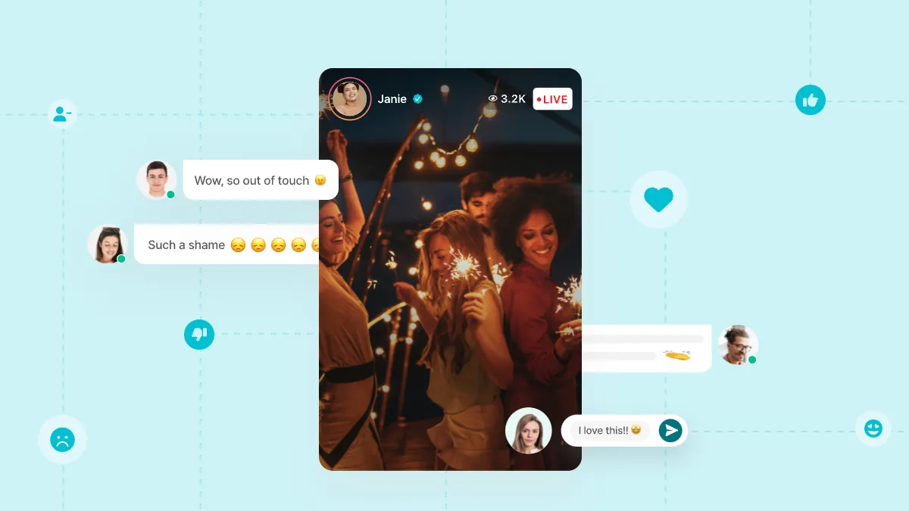

10 common online community challenges (and how to overcome them)
Running an online community is like hosting a never-ending party. It's fun, engaging, and occasionally, a little chaotic. But, like any good host, you'll run into challenges from time to time.
In this blog post, we'll delve into 10 common online community challenges and provide you with practical solutions to tackle them head-on.
Trolls and troublemakers
The Challenge: Trolls are like the party crashers who want to stir up trouble. They post offensive or provocative content that can disrupt the harmony of your community.
The Solution: Set clear community guidelines and rules from the start. Appoint active moderators who can swiftly remove inappropriate content and ban troublemakers. Encourage members to report suspicious activity and support a positive atmosphere.
Low engagement
The Challenge: It can feel like you're throwing a party, but no one is dancing. Low engagement means members aren't participating as much as you'd like.
The Solution: Keep the conversation flowing by initiating discussions, asking questions, and involving your community in decision-making. Create content that resonates with your members, and be responsive to their comments and feedback.
Member burnout
The Challenge: Just like at a real party, members can get tired and overwhelmed by constant interaction.
The Solution: Encourage members to pace themselves and take breaks when needed. Create a schedule for your community activities, so they know when to expect engagement. Promote self-care and balance within your community.
Lack of quality content
The Challenge: Your online community needs interesting content to thrive, but you may struggle to keep up.
The Solution: Involve your community members by encouraging them to contribute their own content. Host regular challenges, contests, or events to spark creativity and generate fresh ideas. Be on the lookout for popular topics and trends to keep your content relevant.
Spammers and scammers
The Challenge: Just like telemarketers calling during dinner, spammers and scammers invade your community with unwanted solicitations.
The Solution: Implement security measures, such as CAPTCHAs and user verification, to keep spammers at bay. Encourage a culture of attentiveness within your community to uphold the integrity and security of your online space, and educate your members about potential risks, including how to identify scams and recognize cyberattacks. Set up anti-bot measures on your website to prevent spam form submission, avoiding the infiltration of your email list and community with spam and security threats.
Inactive members
The Challenge: Some members join the party but then become wallflowers, rarely participating in discussions.
The Solution: Send regular updates and reminders about the benefits of active participation. Create an onboarding process to help new members integrate into the community and connect with existing members. Recognize and celebrate long-time, active members to inspire others. Understanding inactive members can help you develop strategies to re-engage them.
Privacy concerns
The Challenge: Members may worry about their personal information being exposed or misused within the community.
The Solution: Be transparent about your data collection and privacy policies. Assure members that their information is safe and only used for community-related purposes. Encourage privacy settings customization and provide options for anonymous interaction if desired.
Off-topic conversations
The Challenge: Like a party that veers off course, your community might get derailed by unrelated discussions.
The Solution: Gently steer the conversation back on track without discouraging genuine interactions. Create dedicated spaces for off-topic chats or non-community-related content, so they have a place to go without disrupting the main event.
Growing pains
The Challenge: As your community grows, so do the challenges. Managing a larger crowd can be overwhelming.
The Solution: Plan for growth by setting up scalable systems and resources. Recruit and train additional community moderators. Consider creating subgroups or segments within your community to cater to specific interests or topics. Implement tools and platforms that support scalability, ensuring smooth operations as your community grows.
Negative feedback
The Challenge: Negative feedback can be like a wet blanket at your party, but it's an opportunity for improvement.
The Solution: Welcome constructive criticism and feedback. Use negative comments as a chance to learn and grow. Show your community that you value their input and that you're committed to making positive changes.
Conclusion
Running an online community is like hosting a party that never ends, but with the right strategies, you can overcome common challenges and create a vibrant, engaging atmosphere. By addressing trolls, encouraging engagement, preventing member burnout, and fostering a sense of community, you'll be well on your way to a thriving online gathering.
So, remember, keep the trolls at bay, be an engaging host, and watch your community flourish and grow. Cheers to your online community's success!